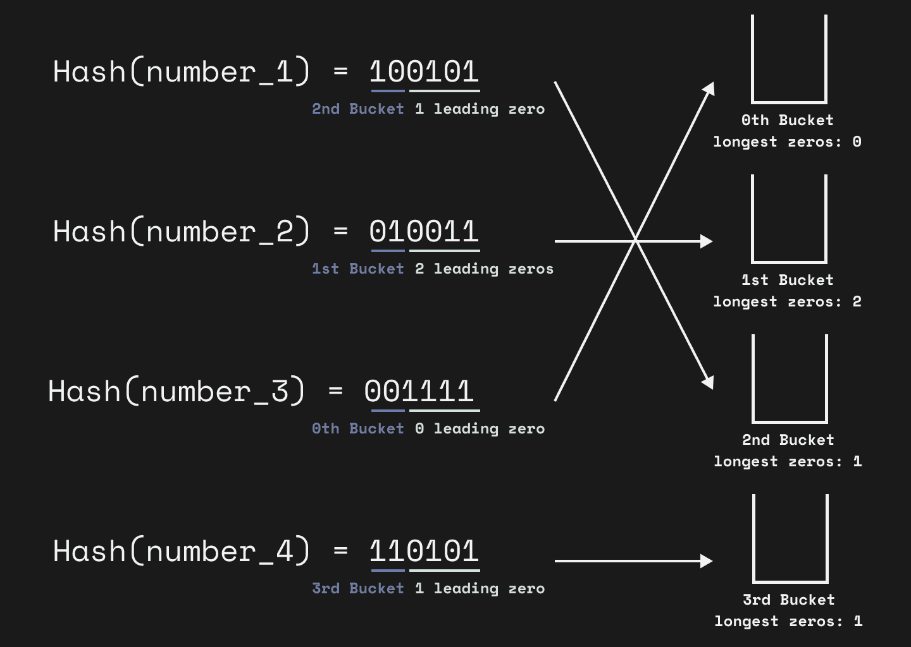

HyperLogLog
HyperLogLog, büyük veri setlerindeki benzersiz elemanların sayısını (cardinality) tahmin etmek için kullanılan olasılıksal bir algoritmadır.
Hyperloglog algoritması $10^9$ a kadar olan kardinaliteler için tek bir 32-bit hash fonksiyonu kullanılacak şekilde ve $m = 2^p, p\in [4,16]$ olacak şekilde tasarlanmıştır.

Algoritma aşağıdaki şekilde özetlenebilir:
- Verisetindeki her bir eleman hash fonksiyonundan geçirilerek öğeler sabit boyutlu rastgele dağılmış sayılara dönüştürülür, buna denk olarak $M$ uzunluğunda ikili (binary) dizelere dönüştürülmüş olur:
$$ h(x) = i = \sum_{k=0}^{M-1}i_k\cdot 2^k:=(i_0i_1\ldots i_{M-1})_2,i_k\in{0,1} $$
-
Hesaplanan hash değerleri iki parçaya bölünür: ilk $k$-bit öğenin hangi kovaya (bucket) olduğunu belirler. Kalan bitler, o kovada saklanacak değerin hesaplanmasında kullanılır.
-
Her bir kayıtta, hash değerinin ikinci kısmındaki en soldaki 1-bitin konumu izlenir.
- Örneğin, ilk 4 bitin birinci kısmı ifade ettiği bir hash için, $h(A)=1010\mathbf{1}0...$ ise, en soldaki 1-bitin konumu 1; $h(B)=11001\mathbf{1}$ ise, en soldaki 1-bitin konumu 2 olacaktır.
-
İlk $k$-bit kova indeksi olarak kullanıldığından, $2^k$ adet kova oluşturulur. Her kova için, o kovada en büyük en soldaki 1-bit konumu saklanır.
-
Son olarak, bu kovaların en büyük değerleri kullanılarak, tahmini kardinalite hesaplanır:
$$ \hat{n} = \alpha_m \cdot m^2 \cdot \left(\sum_{j=0}^{m-1} 2^{-M[j]}\right)^{-2} $$
Bu formülde:
- $\hat{n}$: Tahmini kardinalite
- $\alpha_m$: Düzeltme faktörü
- $m$: Kova sayısı
- $M[j]$: $j$-inci kovadaki en büyük en soldaki 1-bit konumu
Düzeltme katsayısı için sık kullanılan bazı değerler aşağıdaki gibidir:
| $m$ | $\alpha_m$ |
|---|---|
| $2^4$ | 0.673 |
| $2^5$ | 0.697 |
| $2^6$ | 0.709 |
| $\gt 2^7$ | $\frac{0.7213\cdot m}{m+1.079}$ |
Bir sonraki yazıda görüşmek üzere.